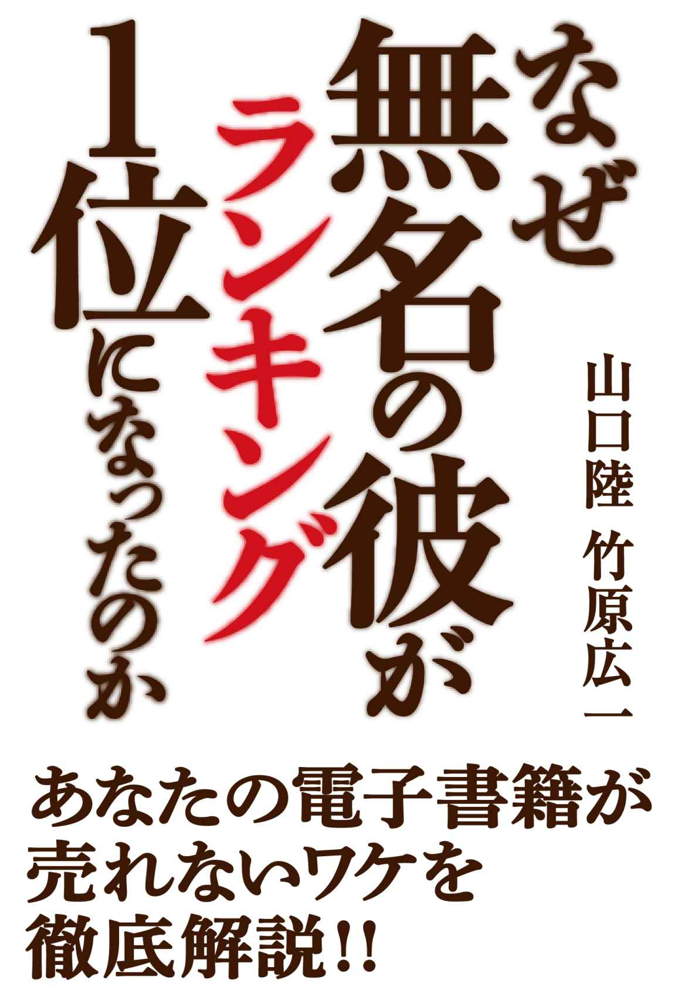

| なぜ無名の彼がランキング１位になったのか？～あなたの電子書籍が売れないワケを徹底解説!!～ | |
| 山口陸 & 竹原広一 | |
| Riku Yamaguchi / Koichi Takehara (2013) | |

なぜ無名の彼がランキング１位になったのか？
～あなたの電子書籍が売れないワケを徹底解説 !! ～
現在公開可能な情報：（本書の標準読了時間）
前半部２０分＋後半部２０分＝合計４０分。
はじめに
この度は『なぜ無名の彼がランキング１位になったのか？～あなたの電子書籍が売れないワケを徹底解説 !! ～』を購入していただき誠にありがとうございます。
キンドルが日本に上陸して以来、巷では個人で電子書籍を配信する方々が増えて来たように思えます。私が電子書籍業界に参入したのは３年前です。その３年前から電子書籍市場を見て来て、今でも電子書籍の制作をしている私にとってはうれしい盛り上がりのようにも思えます。
「よし、私もミリオンセラーを出すぞ！」という意欲のある著者が増えたことに伴い、『売れる電子書籍の作り方』というテーマの本も周りでは多く出版されてきました。しかし、その本の中身を見ると、表紙や説明文に書かれているような話よりも情報が薄かったり、購入者の期待に応えていなかったりするものも数多くあるように私は感じています。それもそのはずです。その人たちは「電子書籍をイチから作って配信させ、数万ダウンロードさせた経験がない」 からです。そのため、理論上・・・という形で執筆をされている作品があります（もちろん中にはちゃんとした本もありますが）。
先ほども言いましたとおり、私は３年前のアイフォンが登場して以来ずっと電子書籍市場を見て来ました（「ついに電子書籍元年が来た！」という言葉も３回は聞いたと思います 笑）。
この期間中、数多くの著者の電子書籍に携わらせていただき、何度もランキング１位を獲得してきました。電子書籍をプロデュースする一番の喜びは、著者と１位をとった瞬間や、数万ダウンロードさせたときなどです。プロデュースして来た側としてはこの上ない喜びがあるから止められませんし、悩んで悩んで悩み抜いて決めたタイトルで上位に上がったときは、それが更に自分自身の自信へと変わる瞬間にもなるので、次への創作意欲が湧くのです。そうして、私は数多くの方々の電子書籍をプロデュースしてきました。
私が最も大事にしている売れるコツとは「購読者が本を購入するときの動き、その瞬間の心理を研究すること」です。私も最初の頃は電子書籍を配信しても全く売れませんでした。１日 10 ダウンロードした日には喜んだくらいのレベルです。でも、なぜ今では配信する電子書籍のほとんどが数千～数万ダウンロードいくのでしょうか。それは先ほども言った「購読者の動き・心理」を研究し続けたから です。配信日はいつが良いのか、価格はどれくらいが良いのか、タイトルの文字数は？ 単語は？ 表紙のカラーは何が良い？ フォントは？ サイズは？ レイアウトは？ どういうジャンルが売れるの？・・・等々、数えたらキリがありません。それらを徹底的に調べ上げた結果、ある日、爆発的に売れる電子書籍の作り方がわかったのです。
売れる本を作るうえで、一番私が大切にしているポイントは「本のタイトル」 です。この重要性を深く理解していない方がまだ多くおられると思います。その結果、配信前は「１００万ダウンロードしたらどうしよう！」なんて夢を描いていたのに、いざフタを開けたら「１ヶ月でたったの 10 ダウンロードだった・・・」なんてことになってしまうのです。
せっかく時代は「個人も本を執筆して配信できる時代」になったのですから、１人でも多くの人に読んでもらい、そして、１円でも多くの印税がほしいじゃないですか！
なので、今回は私が一番重視している「売れるタイトルの付け方」 を本書の前半で余すことなくお伝えし、本書の後半では、いつも一緒に仕事したり遊んだりしている編集者の竹原さんが「〝電子書籍と相性のよい〟原稿の書き方」 をお伝えします。こちらの竹原さんも、電子書籍を数万ダウンロードさせた実績の持ち主です。
私たちと同じ武器を手に入れて、ぜひあなたにもミリオンセラーを狙ってほしいと思い、心をこめて執筆しました。
本書が、あなたの電子書籍をヒットさせるきっかけになれば幸いです。
第１部 売れる電子書籍に共通する〝たった１つのポイント〟
はじめまして。山口陸と申します。
今年で 26 歳になりますが、電子書籍市場にはアイフォンが出た３年前からいます。ずっと電子書籍市場の移り変わりを見て来ました。
昨今、キンドルの電子書籍が出て以降、電子書籍を出そうという方が増えたかと思えます。明らかに３年前よりも気軽に個人出版できる環境が整い始めていますよね。
この第１部では、巷にあるような「配信する前からツイッターやフェイスブックでファンを囲っておきましょう」というようなやり方ではなく、市場の流れを知り尽くしている私だからこそ教えられる〝誰でも実践できる電子書籍の作り方〟の第一歩となるノウハウについてお話ししていきますね。
ちなみに、このノウハウを知った人のなかには
・初配信でAppStoreで総合１位をとったり
・何もせずともブックカテゴリで 10 位以内に入ったり
・１ヶ月で６万ダウンロードさせたり
・電子書籍から見込み客を３０００人以上囲ったり
そういった快挙を成し遂げた人もいます。この結果を出された人は全て「山口流ノウハウ」を体得した人たちです。
今回はその「山口流ノウハウ」の中でも、もっとも基礎となる部分について詳しくお伝えしようと思います。これを知っているのと知らないのでは大きな違いです。売れる本か売れない本か、その時点ですぐに分かってしまうくらい大事な内容となりますので、ぜひとも心して読んでくださいね。
あなたは学生時代に告白をして成功した人？ 失敗した人？
いきなりプライベートな質問から入ってすみません。
唐突ですが、
「あなたは学生時代に恋人はいましたか？」
異性に告白したことってありますか？
山口さん、あんたに恋愛相談したいわけじゃないんだよ！ と思われたかもしれませんが、実はコレとっても大事な質問です。
電子書籍とは何かというと、『ラブレター』なんですね。
ズバリ「告白に成功した経験こそが、売れる本を配出す第一歩」なんです。
ちょっと考えてみてください。
あなたは、告白をして成功したことってありますか？
それとも・・・フラれたことってありますか？
少しだけ思い出してみてください。好きな人と付き合うために、あなたはどんな告白の仕方をしましたか？ あるいは、どんな努力をしましたか？
たとえば、相手に気に入ってもらえるように容姿をキレイにするよう努力したり、どんな人がタイプなのか友人に聞いてもらってそのタイプに近づこうとしたり、偶然を装ってバッタリ会ったり・・・などなど色々あると思います。また、告白する瞬間についてもシチュエーションを考えたりしますよね。こうやって様々な努力をしたり考えたりする人は、告白しても成功します。
でも逆に、「俺ってカッコいいだろ？ 俺と付き合いたいだろ？」といったナルシスト、教室にバラの大輪を持って告白してしまうような人って、基本的には失敗しますよね。
じゃあ成功する人と失敗する人の違いって何だと思いますか？
もともとの容姿？・・・素材？・・・オーラ？
きっとそれもあるでしょう。でも、私が以前きいた話によると、女性は男が思っている以上に中身を重視していますし、男も女性に対して一概に可愛さだけを求めているわけではありません。成功と失敗との違いは、先天的なものよりも努力で得られるものが多いということは、飲み屋でちょっと耳を傾けてみるだけでも分かることです。じゃあ、いったい何が違っているのか？
答えを言いますね。
「付き合えるように工夫した（相手のことが見えている）」 のか
「自分に酔っているだけ（自分のことしか見えていない）」 かの違いです。
まあ・・・そうですよね。
大体この話を聞くと、皆さん「うんうん、確かにそうだね」とうなずいてくれます。
しかしっ！
悲しいことに「電子書籍を配信する」となると、残念ながら多くの人が〝出版ナルシスト〟になっているのが現状なんです・・・
次項から、もっと掘り下げて解説していきますね。
電子書籍の他でも、相手のことが見えていれば、何もせずとも成功します
さっきは告白の例で話しましたが、他の例えでも同じことが言えます。それは、プロのアーティストとストリートミュージシャンの違いです。
たとえば、西野カナさんは女子高生に支持してもらえるように歌詞も恋愛をテーマに共感を集めるストーリーをつくり、今では人気アーティストのひとりとなっています。しかし一方で、路上でギターを弾いているアーティストはどうでしょうか？ 全員がそうというわけではありませんが、彼らの多くは「自分の歌は良い」と考えていると思います。そういう感じの人って見たことないでしょうか？ こういう人を私は〝ナルったアーティスト〟と呼んでいます（別に周りに言っているわけではありませんが・・・）。
「歌が良い」という評価はオーディエンスがすることであり、自分が決めるものではありません。より突っ込んでいうと、友人知人に評価をきいたところで思いやりの裏返しで悪い言い方をする人は基本いないので、周りの人たちの意見を鵜呑みにしてもいけません。第三者の意見、あるいはプロデューサーの意見を聞くのが一番よいでしょう。
そしてこの考え方は、電子書籍を作るときも同じなんです。
【「売れない本」を出す人の特徴】
・原稿ばかりに力を入れて、タイトルや表紙には力を入れない
・内容が良いから売れると思い込んでいる
・配信する市場の流れや仕組みを知らない
・世界中からダウンロードされると思っている
・ＳＮＳで「ダウンロードお願いします！」と無作為にお願いしている
【「売れる本」を出す人の特徴】
・電子書籍を購入する人の行動を熟知している
・内容が良いのは勿論のこと、タイトルと表紙の重要性を知っている
・電子書籍の説明文（紹介文）にも工夫をこらしている
・配信する市場について勉強している
大体こんな感じです。
いかがでしょうか？
もし「売れない本を出す人の特徴」に１つでも当てはまる心当たりがあったら要注意です。
私自身、たくさんの本を手掛けてきましたが、必ず著者さんに言ってきたのは
「主役はあなたですが、購入する人がいて初めてあなたの価値が出るんです」
ということでした。
相手の視点で物事を進めたら、電子書籍だろうがアーティストだろうが飲食店であろうが何でも上手くいきます。上の太文字は、紙に書いてパソコンの近くに貼っておいてもいいので、必ず覚えておいてください。本当に、本当に大切な考え方です。
実践的！ 売れる電子書籍の方程式
さて、ここまでが前置きでした。
お待ちかねの本題に入りましょう。
売れる本の作り方。
ここから先の項目を何度も読むだけで、少なからずあなたの電子書籍は売れるようになります。ただし、ただ読むだけでは効果はありません。先ほども言いましたが、何度も読んでください。そして１００％理解できるまで読み返して、実践してください。
著者をした経験も無い私が電子書籍一本で食べていけている理由は、これから話すノウハウを誰よりも知っているからです。今まで数多くのセミナーをやってきましたが、私のセミナーを受けたほとんどの人から「ここまで濃い内容は初めてです」「誰もそういう観点で教えてくれなかったので参加して本当に良かったです！」「参加費３０００円でこれだけのノウハウを教えてくれるなんて思っていませんでした。 10 万払っても良いくらいです！」といった喜びの声を沢山いただきました。それほど価値あることだと自覚はしてなかったのですが、とてもうれしく思っています。
そのノウハウの本当の肝となる部分について、詳しくお伝えしていきますね。
このノウハウは今後の電子書籍市場を大きくするきっかけのひとつになると私は確信しています。だから出し惜しみなく、本質的な部分を公開します。ある〝たった１つのこと〟を意識するだけで、売れる電子書籍と売れない電子書籍を一瞬で見分けられるようになるのです。
もし今あまり集中できない場所にいるなら、周りに邪魔されず、一人で落ち着ける環境を整えてじっくり読み進めてください。だいたい 30 分ほどで読むことができます。未来永劫ずっと使えるノウハウですから、最高に集中できる状態でお付き合いくださいね。
電子書籍で気をつけるべき〝たった１つのポイント〟
それは「タイトル」です。
当たり前だと思わないでください。もし当たり前だと思ってしまったなら、いま一度、心を入れ替えて聞いてください。
タイトルをつけるのに、どれくらい時間をかけていますか？
読みやすさ、煽り文、そういったものはあるかもしれませんが、本当にそれだけで良いのでしょうか？ もっと直球で言ってしまえば、読みやすさや煽り感だけを考えているだけなら、それは売れないコンテンツです。自己満足で終わっているからです。
大切なのは、「全てを掘り下げて考える」ということです。
さっきも言いましたが、売れる電子書籍をつくっている人は購入者の行動を熟知しています。タイトルにおいてもそうです。あなたがどんなに良いと思えるタイトルを考えたとしても、購入者はその５割も読んでいませんし、覚えてもいません。
ちょっと思い出してみてください。最近買った本のタイトルを全て言うことはできますか？ 覚えているのは、ちょっとしたキーワードや、目にとまった言葉ぐらいではないでしょうか。
私たちは本を買うとき、ある明確な判断基準で買っています。
それは単純に、「面白そう！」 というだけです。
面白そうだから手に取った。これが一番大事なことです。当たり前に思えるかもしれませんが、当たり前のことだからこそ、ちゃんと考える必要があります。つまり、「面白そう！」と思わせただけで売れる本へと変わるんですね。
過去にまったく電子書籍を売ることのできなかった私は、ある日この真実に気づきました。
そしてタイトルを考えるときには、次のポイントを掘り下げて考えるようにしました。名付けて「タイトル探しウォーキング」です。（運動不足になりがちな電子書籍プロデューサーには、これがよいアイデアの種になるんですよ 笑）
【「タイトル探しウォーキング」のポイント】
・そもそも「面白そう」とは何か？
・どういう瞬間に判断しているのか？
・面白そうと思わせる単語は何か？
・またはキャッチフレーズなのか？
・言葉のリズムなのか？
この意識をもって本屋に行き、自分が目に留まった本のタイトルを全てメモしていきました。さらに、次のルールも守るようにしました。
【「タイトル探し」のルール】
・気持ちは楽にしていること
・１冊に対して１秒以内で次の本に移ること
です。普通、本屋で本を見るとき１冊に対して 10 秒以上かけていることってないですよね。大抵ざっと目を通して面白そうなのがあれば手に取る。これが一般的な行動です。私はそのルールに従って手に取ったものを全てメモしていきました。そうすると、次のことが分かったんです。
【「気になるタイトル」の共通点】
・中身を想像させるようなタイトル
・心当たりのある言葉やシチュエーションを想像させる
たとえば、『お金を手に入れる方法』という何の変哲もないタイトルがあったとします。これだと手に取りません。中身を想像させるのであれば『貧乏から１ヶ月で脱出し、月１００万を稼いだ方法』、そして心当たりのある言葉を用いる場合は『何度お金持ちになりたいと願ったか。今、それを叶えるときが来た！』という感じのタイトルに変更することです。
本を探している人は、大抵はヒマな人・・・
本屋で本を探すときでも「○○さんの △ △ の本がほしい！」と決めて来る人もいるとは思いますが、大抵は「何か良い本ないかな～」ぐらいの動機の人たちばかりです。その証拠に、本屋には立ち読みをしている人や店内をウロウロしている人が多数います。そう、本屋にいる人たちはヒマなんです。お目当ての本がないから何か良いものはないかと探している人たちが大半といえます。だからこそ、目に留まらせるタイトルを用意すればコチラの勝ちなんです。
しかし、ここで本屋と電子書籍とは大きな違いがあります。それは「本の中身をじっくり読むことができない」ということと「本屋の本の並びと電子書籍ストアの本の並び方は違う」ということです。
本の中身をじっくり読めないということは、たとえ気になった電子書籍を見つけても納得いくまで中身を吟味することはできません。そのとき人はどういう行動をとるかというと、自分で中身を想像しようとします。つまり・・・
１．タイトルを見る
↓
２．表紙を見る
↓
３．説明文（紹介文）で内容を確認する
↓
４．レビューを見て良い本かを判断する
↓
５．価格が１００円であれば購入を検討する
以上のステップを踏み、購入するかどうかを判断します。ですから、この５つの項目を全て高得点にさせれば必然的に売れる本へと変わります。その中でもタイトルが最初の間口になります。だからこそ、絶対にタイトル付けは１００点満点を目指さなければいけません。
マーケティング用語で「購買心理の７段階」というのがあります。
【購買心理の７段階】
① 注意→ ② 興味→ ③ 連想→ ④ 欲望→ ⑤ 比較→ ⑥ 確信→ ⑦ 決断
何かを購入しようか迷っている人は必ずこの７つの流れをたどって購入します。たとえば家電が欲しいとき、ネット探して良いのがあれば説明や機能を調べ、購入者からのレビューを見て、他店との価格を比較して納得したものを購入しますよね。知らず知らずのうちに物を購入するとき私たちはこういった行動を取っているんです。電子書籍においてもこの視点は必須です。
ただし、ここまで表現を変えつつ何度も言ってきましたが
全ては「注意・興味・連想」から始まります。
これを電子書籍でいうと、タイトルがその役割を担うわけです。（厳密にいうと「表紙」も入ってきますが、まずタイトルを決定しなければ表紙をどんなにこだわっても意味がありませんので、タイトル次第で〝電子書籍の見せ方〟が決まります）
ここで１００点満点のタイトルをつけることができれば、購入者は「面白そう！」と思った自分の直感をもとに、説明文やレビューを確認し、「じゃあ１００円だから買ってみるか ♪ 」という気持ちで購入ボタンを押してくれるわけですね。
電子書籍は〝本ではない〟 !?
前項までで、「中身を全部みることはできないからタイトルが最重要」というポイントは押さえられたと思います。
ここまで大丈夫でしょうか？
タイトルといえば、見え方としては〝たった数十個の「文字」〟に過ぎませんが、ここまで考え抜いて電子書籍を作ってみたという方は、意外と少ないのではないかと思います。神は細部に宿る。それを如実に体感できるフェーズが、この「タイトルを考え抜く」という部分なんですね。
さて、ここまでの解説をきいて「私もやってみよう！」とさっそく息込んでいるかもしれませんが、ちょっと待ってください。その熱意はすごくうれしいんですが、まだ現時点ではノウハウとしては 50 ％しか伝えていません。
ここからは、残りの 50 ％を解説していきます。
「本屋の本の並び方と、電子書籍ストアの本の並び方は違う」
というポイントを押さえてください。
たとえば、あなたが電子書籍について調べたいとき。ネットで「電子書籍」と検索し、ヒットしたページを全てクリックするかといったらそうではないですよね。それぞれのサイト名を全て読むことはなかったと思います。おそらく半分まで読んで「あ、これならほしい情報が書いてあるかも・・・」といった程度の気持ちでクリックすると思います。
電子書籍も同じです。縦に並び、興味のあるものだけをクリックする。これは完全に本屋（以下、リアル書店と呼びます）とは違った目の動きです。リアル書店のように目を左右に動かしながら目に見えて来る表紙や背表紙を見るのではなく、目を上から下に動かしつつ、小さく表示されている表紙と全て同じフォントの無機質なタイトルたちです。つまり、ここで大事になってくるのは
縦の動きに合わせて、どういうタイトルがクリックされるか？
ということです。この部分についても、私は過去に色々と研究しました。
まず、参考になったのはYahoo!ニュースです。実はYahoo!ニュースの見出しは全て 16 文字以内となっています。これは、人間がじっくり読まずとも一瞬で理解できる文字数らしく、それ以上の文字数であれば目にストレスを与えて読まれないそうです。大手のヤフーさんがクリック率を上げるためにそこまで細かな点に気を配っているのですから、これを応用しない手はありません。
電子書籍のタイトルでもこれを応用しようと考えた私は、自分ルールで更に短くして「 14 文字以内が良い」と決めました。
もし、今あなたがご自身の電子書籍タイトルを考えていたのであれば、まずは「文字数が 14 文字以内であるか」を必ずチェックしてください。サブタイトルは何文字あってもいいですが、メインタイトルは 14 文字以内です。そして、この 14 文字で「面白そう！」と思ってもらえるかを考え抜くことです。タイトルが見られる時間は１秒以内という点にも注意してください。ここまでを簡単にまとめます。
＜売れるタイトルのルール＞
・ 14 文字以内のメインタイトル
・１秒以内で「面白そう！」と思ってもらえるタイトル
これが絶対条件となります。そのうえで、先ほど説明した
・中身を想像させるようなタイトル
・心当たりのある言葉やシチュエーションを想像させる
という条件を満たしている必要があります。
次項からは詳しい例を見ながら、さらに深く理解していきましょう。
売れる電子書籍を作るための「タイトル・ワーク」
さっきは『お金を手に入れる方法』というタイトルで例を出しました。そして、中身を想像させるのであれば『貧乏から１ヶ月で脱出し、月１００万を稼いだ方法』、心当たりのある言葉を用いる場合は『何度お金持ちになりたいと願ったか。今、それを叶えるときが来た！』という感じにすればよいと言いましたよね。でもこれは、本屋に置かれている本の場合にのみ有効です。
「 14 文字以内ルール」を適用するならば、このままではダメです。 ここから電子書籍向けにカスタマイズしていかなければなりません。私はこの部分にいつも悩まされます。俳句以上に難しいからです。
ある日、請負ったクライアントのタイトルがまったく浮かんで来なかったので、何を思ったか俳句の勉強をしたこともあります（笑）。「自分に足りないのは俳句だ！」と思ってやったのですが、あまり効果はありませんでした。でも、それくらい難しいのです。１日１タイトル出れば良いほうですので、多くのクライアントを請負うことは今でもしません。プライベートの時間までも削られてしまうくらい過酷な作業ですので。
さて、あなたならどういうタイトルを考えるでしょうか。ここで読むのを止めて考えてみてください。私がセミナーでいつも言っていることは「学ぶことは誰でもできる。学んだ気でいるのが一番よくない。皆さんには体得してもらいます！」 という台詞です。読んで「なるほど！」と理解してくれるのはうれしいのですが、せっかくなのでそこから「行動」に移してほしいと思っています。なので、ここでいったん読むのを止めて、あなた自身の頭を使って必ず考えてみてくださいね。
（まず、ペンとノートを用意してください。）
次のテーマで思いつくことを全て書き出してみましょう。
【テーマ】 お金を稼ぐ方法
【売れるタイトル・４つのルール】
① 14 文字以内のメインタイトルにすること
② １秒以内で「面白そう！」と思ってもらえるタイトルにすること
③ 中身を想像させるようなタイトル
④ 心当たりのある言葉やシチュエーションを想像させる
これらのルールを守って、いったん考えてみてくださいね。
＊（ノートに書いた後に読み進めてください）＊
さて、いかがでしょうか？
いざ考えてみるとなると難しいですよね。私のセミナーを受けた皆さんも言います。こういうことをした経験はないですからね。
ただ、すでに電子書籍をつくったことのある方だけに質問しますが、ここまでタイトルを考えて配信しましたか？ こういった課題でシンドクなるぐらいに、自分の本のタイトル付けで悩みましたか？ １時間、１週間かけても良いタイトルを見つけてやるぞ！という気概でタイトルを考えていましたか？
「売れるタイトル」をつけるためには、こういった頭を悩ませるプロセスを絶対に踏まなければいけません。これなくして売れるタイトルはありえません。もし既に本を出された方がいましたら、今一度ご自身のタイトルがこの４つのルールに当てはまっているかを確認し、微妙に感じるようであれば「非公開」にして新しいタイトルを付け直して再配信することを強くオススメします。そうしなければ、本当に売れませんので・・・
さて、答え合わせをしてみましょう。いまノートにはどんなタイトルが書かれているでしょうか？
私からの模範解答を示すのではなく、この場では敢えて「思考の流れ」を示そうと思います。
〝タイトルの答えは１つではない〟
という意識をあなた自身に強く持ってほしいからです。大切なのは、「どんなタイトルが〝正解〟なのか？」を表面的に知ることではなく、その答えにたどり着くまでに「どのような頭の使い方をして１つのタイトルを導き出したか？」という視点です。それが分からないと、あなた自身が他のテーマで応用することはできません。逆に言うならば「思考の流れ」を知れば、あなた自身が同じ手順で私と同じようにタイトルをつけられるようになります。
では、１つずつ順を追って説明しますね。
まずは、「【テーマ】お金を稼ぐ方法」について。ここからです。
お金を稼ぐ方法とありますが、そもそもお金を稼ぎたい人ってどんな人でしょうか。主婦、学生、サラリーマン、フリーターで、「できれば働かずに稼ぎたい」「こんな貧乏な生活から抜け出したい」「海外旅行や高級車やタワーマンションに住みたい」「もうお金に困る生活をしたくない」そういう考えを持っていそうですね。
でも、絶対に「そんな上手い話はない」とも思っているはずです。しかし、こういう人は大抵「ＦＸや株で一発当てれば・・・」なんてことも思っている可能性がありますし、ＦＸや株だって結局は働かずに稼ぐための手段として選ばれたものです。ＦＸや株は投資金とリスクがあるということも考えているとは思いますが、そこをフォローしてあげるタイトルにするのは１つの手ですね。
もう少し別の視点から見てみましょう。そもそも「お金持ちになりたい」という欲求は誰もが持っていますが、それを表立って言うのは日本人の特性上、少し恥ずかしいですよね。そこをあえて刺激してみると面白いタイトルが出てきそうです。メインタイトルを『もし、この本で金持ちになれたら』（ 15 文字）にして、このままでは漠然としているのでサブタイトルでは『～月 10 万収入を上乗せさせるためのプチビジネスの始め方～』というのはどうでしょうか？
全部を合わせると『もし、この本で金持ちになれたら？～月 10 万収入を上乗せさせるためのプチビジネスの始め方～』。サブタイトルでは少し具体化にイメージさせるようにしました。月 10 万円であれば稼げそうですよね。億万長者を狙うよりも 10 万という数字のほうが反応は良いですし、ビジネスという言葉を使えば胡散臭さが消えます。ただし、ビジネスとなると身構えてしまいそうなので、それを和らげるために「プチビジネス」という言葉を入れました。こういった思考をたどり、タイトルを完成させます。
いかがでしょうか？
自分としてはこのタイトルは 70 点という感じです（このタイトルは本当にいま執筆しながら考えました）。 30 点ほど減点されたのは、「面白そう！」と思わせる要素が弱いなーと感じたからです。
このような場合は「類似したタイトルを見ながらチェックする方法」 があります。
Amazon.co.jp にアクセスして、今回の題目にあるキーワードの「金持ち」「お金稼ぎ」「お金」等で検索をかけていきます。アマゾンは、プロの編集者がつけたタイトルがたくさん並んでいます。少なくとも私たちよりもタイトルに関して勉強され、経験値を積んだ方々です。これらのタイトルを見て自分の考えたタイトルに近いものがあるかどうかを探します。もしなければ、それは売れないタイトルなのかもしれませんし、探しているとき目に留まったタイトルは自分が面白そうと感じたタイトルなので、その路線に変更しても良いと思います。私も今からアマゾンで探してきますね。
＊＊＊
探した結果、色々なタイトルに目が留まってしまいました（笑）。
では、どういうタイトルや単語に興味を持ったのかというと
「～の教え」
「教科書」
「なぜ～？」
「資産」
「～作り方」
といったものでした。さすが天下のアマゾンですね。良いタイトルや単語のものが所狭しとありました。ただ、「もし～」から始まるタイトルは見当たらなかったので考え直す必要がありますね。個人的には「～の教え」「教科書」というのが心を掴まされたのでコレを使って改めて考え直してみます。
・貧乏から脱出した人の教え（ 12 文字）
・本気でお金を稼いだ人達の教え（ 14 文字）
・金持ちから教わる金儲けの教科書（ 15 文字）
・１週間で３万円を増やす教科書（ 13 文字）
とりあえず４つのタイトルが思いつきました。
こうやって考えると、さっき考えた『もし、この本で金持ちになれたら』はちょっと変でしたね。個人的には『金持ちから教わる金儲けの教科書』がしっくりきます。なので、これで行こうかなと思っていますが、この話をきくと「最初からアマゾンで目に留まるタイトルを調べて考えた方が早いのでは・・・？」と思う人もいるかもしれません。
ごもっともな意見ですが、私はそれでは良いタイトルが出てくるとは思えないですし、自分でイチからタイトルを考えなければ成長できませんし、何より電子書籍の中身を見失ってしまいがちです（タイトルと中身がかけはなれているとレビューが荒れます 苦笑）。なので、アマゾンを使うのはいわば答え合わせのようなものです。自分で考えたタイトルがアマゾンで配信されているタイトルと同じか、それに近いものはプロの編集者に近づいた証拠になりますので、似たようなタイトルを見つけたときには私はうれしくなります。
このようにしてタイトルを考えていきます。ただこれを納得いくまでやりますので、私の場合はこの作業を最低３回やります。そして、全部決まったら数時間ほど遊びに行きます。タイトルを絞り出すのに使い切った頭を休ませてあげ、心もリラックスさせなければ身が持ちませんしね。また、リフレッシュした状態で絞り出したタイトルを見るとさっきまでは良いと思っていたものも、改めて見るとそうでもなかったりする場合があります。そういうタイトルは良いタイトルではないので思い切って候補から外してください。そうして残ったタイトルこそが良いタイトルですので、それを自信をもって起用してください。
目を留めさせる単語を日頃からストックする
良いタイトルこそ売れる本へと変わる訳ですが、そうポンポンと出てくる訳ではありません。出てくれば苦労はしないのですが・・・。
いつでもスムーズにタイトルが思いつくように、普段から私は心がけていることがあります。それは、「自分が気になったタイトルや単語をメモすること」 です。特に良い単語が見つけられる箇所は
・電車の中吊り広告
・テレビ
・雑誌
・ネット
・迷惑メールの件名
・ＤＭ
などです。自分が気になってクリックしたものや目に留まったものは、ある単語やタイトルに興味を示した証拠です。そういうものはメモを取り、なぜ気になったのかを考えます。 そこで出てきた単語やタイトル、あるいは言葉のリズムかもしれませんが、そういうものをどんどんストックしていきます。すると自分の引き出しが多くなり、色々なバリエーションのタイトルを出すことができます。
こうすることで、多種多様なジャンルのタイトルにも応用することが可能となり、売れるタイトルを生み出しやすくなります。いつも過ごしている生活の目線を変えて過ごしてみてください。そうすると、思いがけないくらい「目に留まる単語」が多いことに気づきます。日本は本当に広告大国ですね。
遊びながらタイトルを考える習慣をつくる
ここまでタイトルの重要性をお伝えしてきました。
「タイトルを考えるのにここまでするのッ !? 」とびっくりしたかもしれませんが、ここまで、やります（笑）。ここまでやらないと売れません。
せっかく原稿を何万字も書いても、読者の目に触れなければ意味ないですよね。そういった意味でも、タイトルはあなたが伝えたい本文の内容とガッチリ両輪を組んでいるのです。最初は面倒に感じることもあるかもしれませんが、慣れてくるとタイトルを考えるのがとても楽しくなってきますよ ♪
あなたは今日から、たくさんの単語やタイトルに目を凝らすようになるでしょう。あなたは今日から、たくさんの単語やタイトルに目を凝らすようになるでしょう。あなたは今日から、たくさんの単語やタイトルに目を凝らすようになるでしょう。（意図的に催眠誘導しておきますね 笑）。
メモは手書きでもケータイでもいいので必ず取ってほしいのですが、気になった単語を使ってタイトルを作る練習も同時にやってみてください。 たとえば、電車の中で見た中吊り広告に『出世する人、一生社畜な人』というタイトルがあったとします。まずはコレを丸々メモします。なんで目に留まったかを考えてみると、今回は「○○な人、××な人」というフレーズに惹かれたんだと気づきます。それに気づいたあなたは、今度は今までメモった単語を使って、このフレーズに当てはめてみたり、自分なりにタイトルを考えてみたりしましょう。たとえば『売れる本を書く人、売れない本を書く人』とか『モテる男、モテない男』とかです。
そして、タイトルを考える練習をする際に、先ほどやった４つのルール（ ① 14 文字以内のメインタイトルにすること／ ② １秒以内で「面白そう！」と思ってもらえるタイトルにすること／ ③ 中身を想像させるようなタイトル／ ④ 心当たりのある言葉やシチュエーションを想像させる）を意識してタイトルを考えるのです。
私はいつもタイトルをつける訓練をしています。もう職業病でしょうか、この作業をしない日はありません。毎日アタマの中でグルグルグルグル色々なタイトルが生まれてきます。その数だけ良いタイトルが生まれ、それが売れる本へと変身するのです。そう考えると、この作業をするだけでランキング上位を狙えるので〝お金の成る習慣〟 といえそうですね（笑）。
タイトルには様々なパターンがある
本のタイトルには、いくつか共通点があります。これを知っておけばタイトルを考える際に迷わずに決めることができます。（ただしこれが全てという訳ではありませんし、あくまでも基礎としてご自身で応用していっても構いません。慣れるまではこの決められたパターンに合わせてみるのも大事です。）
【「～術」「～の方法」といった単語で終わるタイプ】
このタイプは、タイトル自体にシュッ！と締まった印象を残しやすいです。また、少し固めの印象を与えるため、真面目なコンテンツには使いやすいです。
○ 可愛い彼女をつくる方法
○ １週間で２キロ痩せるダイエット術
○ できるビジネスマンの仕事術
等ですね。ただ、気をつけなくてはならないのは、固い印象を与える単語を多く使ったり、難しい漢字ばかりを使ったりすると固過ぎて目に過度のストレスを与えてしまい、反応率が低下してしまうということです。
× 超最速出世術
× 史上最強記憶術
こういったタイトルは誰も見なくなりますので気をつけましょう。
【対比タイプ】
この場合はタイトルが長くなってしまう可能性もありますが、魅力的なタイトルにすることでき、分かりやすいタイトルになります。ただし、タイトルに使うと 14 文字以上になることが多いので、もし使うとしたら表紙で使うようにするとよいでしょう。
○ 一流のナンパ男、二流のダメ男
○ 勝てる投資、負ける投資
○ できる仕事術、ダメな仕事術
といった感じです。タイトルだけで中身が比較的わかりやすいですね。ただ何度も言いますが、 14 文字以上になる可能性が高いのでその点をどうするかが肝となります。
【数字タイプ】
数字を使うのは非常に有効です。特に、ヒマつぶしで来ている人にとってはイメージしやすくさせる効果がありますし、漠然とした単語（永遠、幸せ、最強など）と一緒に使うとタイトルの意味を具体化してくれます。
○ 売れる電子書籍の７つのコツ
○ ７日間で売れる電子書籍を作る方法
○ 30 分で幸せの意味が分かるたった１冊の本
いかがでしょうか。今までで出てきたタイトルよりも一番しっくりくるタイトルだと思います。しかし、このタイトルは使い方を間違えると訴求力の低いタイトルになることもあるので注意が必要です。
× ハッピーライフを送る３つのメッセージ
こういうのは電子書籍タイトルには向きません。「面白そう！」という以前に大人しすぎて頭に残らないので、印象も残らず次の本のタイトルに目が移ってしまいます。十分に気をつけましょう。
【語り口調タイプ】
このタイプは見た人を全員ドキッとさせる効果があります。ただし、目を留らせるという観点でいけば一番効果はありますが、使い方を間違えれば上から目線になるため敬遠されがちになることもありますので、この温度差を見極めるには少し経験値がいります。
・なぜ、君は彼女ができないのか？
・そうか、君は課長でもないのか？
・さぁ、今から金持ちになろう。
といった感じです。こういうのはすんなり頭に残り、いったん自分に問いかけるようになります。「え？ 俺に彼女ができないってなんで分かるんだよ」という感じです。そうなると、人は答え合わせをするように本の中身を見たくてクリックするようになります。
＊＊＊
タイトルを決める際に使えるパターンをいくつか紹介しました。もっと他にもあるのですが、本書ではこれぐらいにします。たくさんのことを一度にインプットしてもアウトプットが難しくなりますので。
まずは基礎となるこの４パターンを使って色々なタイトルを自分で考えてみてください。そして、そのタイトルを考えたら次はアマゾンでタイトルを答え合わせしてみる、この作業を１日１回でもやり続けると「色々なタイトルを生み出せる人」 へと変身です！
ランキングを毎日見るだけでも相当な勉強になります
私は電子書籍市場を見続けてきました。かれこれもう３年目になります。
キンドルが日本に上陸したのは２０１２年の秋頃でした。私が完全にプロデューサー側につかずに今でもプレイヤーでありつづける理由は、市場に参入している感覚を常に持っていたいからです。様々なテーマの作品を出して、どういうジャンルが売れるのか、このジャンルは何色を使ってどういう単語を使ったら売れたのか、といったデータを蓄積させています。
今日通じたノウハウやデータも、来年には使えない可能性があります。 去年と同じ感覚でやり続けると多くの人にウソを教え、そして自分自身が破滅の道へと進む可能性もあります。ですので、私はそんな恐ろしいことにならないようにヒマがあればランキングを見るようにしています。そうすると、新着の電子書籍を見ただけで「これは伸びるだろうなー」とか「これは伸びないな・・・」という判断もできるようになります。
また、ランキングの前日からの伸び率を見ても分かります。一種の株をやっている感覚みたいなものですが、そうやってひとりで「１位を取りそうな電子書籍はどれだゲーム」 をするのも、売れる電子書籍をつくるための経験になっています（笑）。私には電子書籍しかないので、毎日が訓練です。
電子書籍を一人でつくるのか、誰かと一緒につくるのか？
ここまでクドイくらいに解説しましたが、タイトルの重要を認識できましたでしょうか？
本を購入するときは、リアル書店（本屋）でも電子書籍でも「タイトル」が入り口です。タイトルが魅力的でなければ誰も購入してくれませんし、手に取ってもくれません。でも、多くの人はタイトルの重要性を軽視して一日でも早く本を出すことに目を向け、中身の内容ばかりを磨き上げようと躍起になっていることを、私は非常に残念に思っています。
もちろん、本を執筆するのは可愛い我が子を育てるようなものですので、少しでも良くしたいという気持ちがあるのは分かります。電子書籍に対してそういう愛情を持っている人や、大義名分がある人と私は仕事をしていきたいとも思っています。
なので、もし本書を読んで「私は売れるタイトルを考えるのが苦手だ！ これじゃあ売れない！」と思ってもどうか諦めないでください。 そういう人は、電子書籍を上位にさせることのできるプロデューサーと組めば良いだけの話ですし、もし周りにそういう人がいないのであれば、私に声をかけてください。ご相談に乗りますので。
電子書籍も紙の書籍も、著者／編集者／出版社がいて成り立つものです。電子書籍であれば、編集者や出版社の役割は著者自身が担うこともできますが、きちんとした編集作業やリリース作業をやろうとすると、また別の能力が求められます。現実に、「一人で簡単に電子出版できる！」とか「あなたもセルフ出版できる！」などと世間ではまことしやかに言われるようになりましたが、実際に電子書籍をリリースしたことのある人は痛感しているはずです。電子書籍を１つ配信するのって「かなり大変」 ですよね・・・？
自分の作品を一人でも多くの人に見てもらいたいのであれば、一人でやらずに誰かと組むのもひとつの方法です。そのために電子書籍プロデューサー山口がいるわけです（笑）。
一日でも早く多くの人に見てもらえる作品をつくるには「電子書籍をつくる作業を分担する」という選択肢もある ことを知っていただければと思います。
電子書籍で一番変わったのは自分自身
最後に私からお伝えしておきたいメッセージがあります。
「電子書籍は、人生を変えるチャンスになる」 ということです。
私自身、電子書籍一本で会社を辞めることができて、今では悠々自適に暮らしています。この前、大学時代の友人らと集まって飲みましたが、皆が「明日も会社かー。行きたくないー」「辞めたい」「安月給のまま歳くっちゃうのかな」と口をそろえて言っていました。私も電子書籍と出会っていなければそうなっていたのかと思うと、本当に良かったなと自信をもって言えます。
電子書籍で数々の実績を出すことにより、クライアントの喜ぶ顔と喜ぶ声が聞け、「山口さんにお願いして良かった！」と言ってもらえて、セミナーをすると多くの方が「有意義だった！」と満足してくれます。いちばんうれしいのが「山口さんのセミナーを受けて、電子書籍を配信したおかげで１位を取りました！ 本当に山口さんのおかげです！ 電子書籍で人生が変わりました！」なんて、聞いているこっちがとても恥ずかしくなりそうな台詞を真顔で言ってくださる方もいたりして、本当にやってきてよかったと思いました。
ビジネスにおいてもそうです。電子書籍プロデュースを通じて様々な方と出会えて、一緒にビジネスをする仲間も増えました。実際、今まで電子書籍を作ってきた側の私がこんなふうに自分の本を配信するとは思ってもいませんでした。これも共著で原稿を書いてくださっている竹原さんのおかげでもあります。（竹原さんも電子書籍を通じて知り合った方の一人です）
何度も言いますが、電子書籍はこれからもどんどん伸びる市場です。本書を読んでいるあなたに伝えたいことは、売れる本の作り方もそうですが、
「まず電子書籍の市場について深く知ること。
そして、電子書籍を購入する人の気持ちを知ること」
これが一番、大事だということです。
この答えにたどり着くまでに、私は何度も失敗を繰り返して来ました。今でもチャレンジ精神でいます。新しいノウハウやデータをどんどん取っていきたいと考えています。
最後の最後に、私の座右の銘を。
これは千利休が茶道を極めようとする者への教えとして説いた和敬清寂のひとつです。茶道に限らず、この教えは常に私の向上心を高めてくれています。
その道に 入らんと思う 心こそ
我が身ながらの 師匠なりけれ
＊茶道に限らず、学ぼうとする気持ちをしっかりと持つことが大切であり、自分で学ぼうとする心こそが上達への第一歩である。
学ぶ者の心構えについての歌です。
どうか、せっかくのご縁でこの電子書籍でお会いできましたので、ただ理解するだけでなく、ぜひとも本書の内容を体得していただければと思います。
もし、電子書籍で生活を潤したい、ランキング上位にさせたい、電子書籍で何かひとつ人生の足跡を残したいと思っている方は、私のフェイスブックでも構いませんのでメッセージをいただけるとうれしいです。
ぜひ、私と一緒に電子書籍市場を盛り上げていきましょう！ 仲間も大募集しています。
ここまで文字だけでは分かりづらかった部分もあったかと思います。もし何か疑問点や質問などあればお答えしますので、どんな些細なことでもいいので気軽にメッセージを送ってもらえるとうれしいです。
山口陸フェイスブック
https://www.facebook.com/nrtgumd
また、フェイスブックをされていない方でも大丈夫です。次のフォームからご質問やリクエストにお応えします。本書を読まれた感想などもお待ちしています！
電子書籍の目安箱（Ｑ＆Ａコーナー）
最後まで読みいただき、本当にありがとうございました。
あなたの成功を祈っています。
現役プロデューサーが教える！ 電子書籍の最新情報
【山口陸の電子書籍通信メールマガジン】
メルマガ登録はこちらです。
↓↓↓
http://emfrm.com/CBM/fr/book/l5EvRN
第２部 〝パワポ４枚で書ける〟究極のライティングメソッド
はじめまして、竹原広一です。
山口さんの第１部で少しご紹介いただきましたが、まずは簡単に自己紹介します。
竹原広一（たけはら・こういち）って何者・・・？
もともとは紙の書籍編集者です。編集プロダクションで紙の本を手がけてきました。そのときの経験をもとに電子書籍市場に参入し、ランキング１位を獲る作品をプロデュースしました。元々は、ハウツー本、ノンフィクション系の書籍を編集していたので「ノウハウもの」のコンテンツが得意です。コピーライティングの知識を織り交ぜながら著者さんの原稿を編集するため、人間心理（＝心の動き）に合わせた内容に仕上げることができます。
この第２部では、人間心理にもとづく「読者をトリコにする原稿の書き方」をお伝えします。今まであなたが電子書籍を出した経験があってもなくても、きっと参考になるノウハウですので期待しながら読み進めてくださいね！
ではでは早速、参りましょう。
山口さんには主に電子書籍の「タイトル」について解説してもらいました。この原稿は彼の編集を終えてから書いているので、その流れを汲んで相乗効果のある話をしていきます。
僕からお伝えするのは
「パワポ４枚で書ける」究極のライティングメソッド
です。
ちなみに〝パワポ（＝パワーポイント、スライド、プレゼン資料）〟というワードは、本書の最後のところに出てくるので意識しながら聞いていただければと思います。
「このテーマで電子書籍を出したい！」といざ思っても、自分で原稿を書き上げるのは慣れていないとかなり大変です。もちろんライターさんに頼んでインタビューから文章を書いてもらうこともできますが、自分の意図を１００％反映させるのは意外と難しいものです。
・美しい文章
・正しい文章
・読みやすい文章
を書けば、必ずしも売れる電子書籍になるわけではありません。売れるポイントは、もっと別のところにあります。
これは文章力や語彙力が高いのとは別の話です。
特に、電子書籍の特徴として
・読者は（コンテンツ本文を）読まない ＝ Not Read
の壁が、紙の本に比べてはるかに高くなっています。
ちょっと考えてほしいんですが、電子書籍は電子書籍ビューワーで読まれます。今のところ大部分はスマートフォンですよね。画面が小さい、移動中に読む、集中して読めない。そーゆー環境で読者が読んでいるという事実をまず押さえてください。このイメージは、電子書籍をつくる全プロセスで意識しなければいけません。（山口さんが「まずは電子書籍の市場を深く知る。そして購入者の行動を熟知する」と言っていたのと同じ話をしています）
紙の本を読むときよりも、さらに電子書籍は「読まれない」。
電子書籍は「読まれない」。
電子書籍は「読まれない」。
電子書籍は「読まれない」。
念仏のように唱えてもいいと思います。
電 子 書 籍 は 「 読 ま れ な い 」 。
これぐらいの気持ちで、原稿を仕上げる。すると、電子書籍の本当の価値がわかってきます。
・・・本当の、価値・・・？
さて、電子書籍の本当の価値ってなんでしょうか？
答えは本文中のどこかに隠されていますので、注意深く読みすすめてくださいね。
まずは、
「読まれない」電子書籍を「読ませる」には、どうすればいいか？
「影響力のある文章」を書くには、どうすればいいか？
そのへんの話から進めていきましょう。
大切になるのは、【電子書籍の「コンセプト」】です。
電子書籍の「コンセプト」をつくろう！
コンセプト、という言葉をきくと難しく思うかもしれません。まぁコンセプトというといろんな議論があるので、ここでは難しく考えないということでお願いします（笑）。
今回お話するのは何のコンセプトのつくり方かというと、すべてのコンセプトの話 です。
電子書籍を出す前のリリース告知、リリース当日の宣伝、リリース後の読者へのアプローチなどなど、「点（＝電子書籍を発売すること）」だけでなく「線」や「面」でやるべきことを捉えたとき、自ずと必要になってくるのが「コンセプト」です。
もうちょっと広げていえば、キャッチコピーのコンセプト、コンテンツ内容のコンセプト、商品そのもののコンセプト、セミナーをやるならセミナーのコンセプト、ユーストリームやウェビナーのコンセプト、電子書籍プロジェクト全体像のコンセプト・・・などなど、すべてのコンセプトの話です。
電子書籍を基点としてあなたが活動を大きくしていくとき、様々な場面でコンセプトが必要になってくるんですね。メールを１通書くときでさえもコンセプトが必要、すべての場面でコンセプトが必要なんですけど、今回はそのコンセプト、「究極のコンセプトのつくり方」 を教えます。
でもその前に。
ここからは「ノート」と「ペン」を用意して、手を動かしながら、書きながら、読んでください 。ツイッター１４０文字すら書くのが苦手、という人でも必ず電子書籍向きの原稿が書けるようになりますので、ここからは〝必ずノートとペンを用意して〟読むようにしてくださいね。
・・・では、いきますよ？
究極のコンセプトのつくり方
究極です。
書いてほしいんですけど、【 行動を構築する 】 と書いてください。
行動を構築する、です。つくるっていう意味ですよね。
あなたがしないといけないことは、読者に行動を起こさせることなんですね。ただそれだけなんです、実は。
「行動」を起こさせることが、あなたがやらなければならないことなんです。
で、行動を起こさせないと、結果を見ることができないんですね。結果を得ることができないんです。そしてあなた自身も行動がない限り、結果を得られないんですね。
結果が得られないとどうなるかというと、人間関係が終わっちゃう。相手との人間関係が終わってしまう。
なぜなら、僕たち人間は、あなたも、あなたのお客さんになる人も、チームメンバーも、すべての人たちは、結果を得たくて、何か現状を変えたいとか良くしたいという気持ちで前に進んでいるし、生活していると思うんです。もっと悪くしたいとか、もっと不幸になりたいという人は、たぶんあまりいないと思います。
ほとんどの人は、何かを変えたい、何か結果を得たい、もっと幸せになりたい、もっと収入を上げたい、もっと健康になりたい、もっと彼女がほしい、もっとお客さんを集めたい、もっと何かを向上させたいと思っています。
あなたは彼らと関わっていますよね。キーパーソン（重要人物）として彼らに関わっています。 だから、彼らに何か行動を起こさせない限り、彼らは結果を得られないんですね。そうしないと彼らとの人間関係は終わってしまいます。彼らは結果を得られない、あなたと関わってでも結果を得られないと思ったらどんどんどんどん離れていくんですね。距離が離れていく。そして他に、結果を得られる人を見つけようとするんです。
だから、もしあなたが孤独になりたくなくて孤立したくなくて、一人ぼっちになりたくなかったら・・・なんとかして周りの人、あなたの関わっている人に結果を出させる必要があるんですね。みんな結果を求めてるから。
ちょっとドライな言い方をします。
結果を与えることができなくなったら、みんなあなたを必要としてくれなくなります。
メリットがないから、あなたといることで。
必要ではなくなるんです。
人間関係をカットされるんです。
だから、あなたはカットされないために、彼らに結果を得させる必要があります。
こーゆー話をすると、けっこう偏った考え方だと感じるかもしれません。しかし、電子書籍を出すときはドライな発想をもってやったほうが「結果が出る」という意味で、歯に衣着せず大事なポイントを、あなたと１対１で話しているつもりでお伝えしたいと思います。
読者に「行動」を起こさせる
では、またノートに書いてください。
人は、すぐに集中力が切れて、すぐにモチベーション下がって、すぐに退屈になって、すぐに飽きるんです。（これは本当に書いてくださいね）
【 人間は、すぐに飽きる。 】
【 人間は、すぐに退屈になる。 】
【 人間は、すぐに集中を途切らせる。 】
【 人間は、すぐにモチベーションが下がる。 】
一瞬で、そうなるんです。９９・９９９％の人たち、ほとんどの人たちは、ほぼ全ての人たちは、すぐにやる気もなくなるし、集中も切れるし、退屈になってあーっ(´Д｀)って飽きちゃうんですね。すべての物事に対して。このことをまず覚えてください。
そして、あなたが電子書籍でやるべきことは、彼らの「興味を引き続けること」 なんですね。彼らの興味を引き続ける必要があるんです。
ただ文字をキーボードで打つことがあなたの仕事ではありません。何の目的もなく、見通しもなくパソコン画面にうーって頭を抱えて唸るのがあなたの仕事じゃないんです。
行動してくださ～い
ってマイクテストしてるときみたいに、何かをモゴモゴ言ったりすることでもありません。
こうしたらいいですよ～
とか、ボソボソぼそぼそモゴモゴもごもご言うことがあなたの仕事じゃないですね。
電子書籍をつくるときには、大なり小なり「教育者」 という視点が大切だと僕は思っています。何かを伝えるというのは「読者に変化を与える」 ということですから。
あなたは、教育者として彼らの興味を引き続けて、すぐに飽きちゃって、すぐにモチベーションが下がっちゃって、すぐに集中力が切れちゃう人たちに対して、なんとかしてモチベーションを上げ続けなければいけない。なんとかして飽きないように飽きないように、工夫し続けなければいけない。なんとかして集中を続けさせてあげなければいけない。退屈しないように興味深くキープしないといけない。
あなたがしないといけないことは、彼らの興味を引き続けることなんです。電子書籍の本文中で。
よく誤解されているのは、「僕はこういうことをしています。良いことをしています」とか「こういう内容を話しています」とか「すごいでしょう」とか、自分の話すこと、教えている内容に気を遣っている人が多いということです。カフェで話すときだったり、クラスで話すときだったり、チームメンバーに何かを言ってるときだったり、どんなときであっても、たぶん「何を言うか？」を自然と考えていると思うんですけど、ここで覚えておかなきゃいけないのは
彼らの興味をどうやったら、引き続けられるかな？（・ ∀ ・）
ということです。
あなたのメッセージは、そうしないと伝わらない。どんなに良いことを書いても、あなたが本当に素晴らしいことを、たとえ心を込めて寝る間も惜しまず伝えようとしても、相手の集中力が切れちゃってたら、意味ないですよね。理解度も下がるし、全員がものすごいモチベーションで読んでくれているとは限らないんです。
さきほど「何かを伝えるとは、相手を変化させること。つまり、私たちは大なり小なり教育者だ」と言いました。「教育」とは何かというと、相手の能力を引き出してあげることです。 詰め込むことではないんですね。
周りの人たちの能力を引き出してあげるのが「教育者」です。ですから著者を名乗る人はすべて、教育者といえます。 リアルに会わずとも、書籍というアイテムを通じて読者と関わっている。その時点で責任が生じます。とにかく彼らに行動（これは内的変化も含みます）を起こさせ、そして結果を見させてあげる。だから彼らの興味を引き続けることが必要なんですね。
読者の「行動」を引き起こすフォーマット その１
では、どうやって彼らの興味を引き続けることができるのか。
明確なメソッドがあります。
【 フォーマット 】 と書いてください。
秘密のフォーマットがあります。これは僕が目次案や企画書をつくるときに、著者さんと一緒になって話している内容なんですけど、２つフォーマットがあります。テンプレートというか。
まず１つめのフォーマットです。書いてほしいんですけど、
【 １．なぜ 】
【 ２．なに 】
【 ３．どうやって 】
【 ４．いますぐ 】
と書いてください。この４つのステップで書くというフォーマット。
これは「なぜ・なに・どうやって・いますぐ」と覚えてください。なぜ、これを伝える必要があるのか。なぜこれを知る必要があるのか。あ～なるほど。だからこれを覚えなきゃいけないのか。じゃあ、それとは何なのか、いったいどういうことを意味しているのか。そしたら次に、これをやるにはどうやったらいいのか、実現できるのか。そして最後に、今日すぐにできることはコレだよ、まずはコレをやらなきゃいけないんだよ、いますぐコレをやらなきゃいけないんだよ・・・という一連の流れです。
これと比較できるのは、学校教育です。
ちょっと考えてみてほしいんですけど、たとえば中学校の勉強でこの「なぜ・なに・どうやって・いますぐ」というフォーマットが仮に完璧なフォーマットとすれば、学校の勉強では何が抜けていると思いますか・・・？
１分ほど時間を取って、思いつくことをノートに書き出してみてください。
ψ(‥ ) ｶｷｶｷ...
・・・〆(・ω・｀ )ｶｷｶｷ
ｶｷｶｷ ○Ｏ0o。。。.φ(_ _).。ｏ○ｸﾞｩゥゥゥ
zzz...
ゴシ(-ε＼)(／з-)ゴシ
・・・ん？ 書きましたか ？ ？ (・ ∀ ・) ？ ？
ちょっとコーヒーブレイクした後、次にいきましょう。
学校教育に抜けていること
僕が友人とこの話をしていたときに、彼が言っていたのは
２番めの「なに」と４番めの「いますぐ（＝宿題をとにかくやればいい）」というのはあるけど、１番めの「なぜ」と３番めの「どうやって」が抜けているんじゃないかな・・・
ということでした。
よく考えてみれば、そういう部分は多いですね。学校の成績がいい子どもたちというのは「なに」派や「いますぐ」派が多いと思うし、「なぜ」とか「どうやって」で足踏みしちゃう性格の子は、どちらかというと開花しない傾向にある。
でも、どういう部分が響くかは人それぞれ違うんですね。タイプが分かれてる。いま教えられていることが「なにか？」っていうことを教えられてたらすごく勉強しやすい子と、これを勉強するのは「なぜなのか？」って言われたらすごく勉強しやすい子と、じゃあ勉強を「どうやってすればいいのか？」がわかれば勉強しやすい子もいれば、「今日はコレをやればいいんだよ」ってその都度ちゃんと教えてあげると勉強しやすい子もいる。性格が違うから、覚えたり理解したりするモチベーションも違うんです。
だから、特に学校の中の成績においては、すごく勉強できる子とできない子の違いは、「なに／いますぐ」派と「なぜ／どうやって」派に大きく分けると線引きされていると思います。勉強がはかどるのは「なにを勉強しているのか？／いますぐ具体的になにをすればいいのか？」という刺激を受けて、自分が「なぜ勉強しているのか？／どうやって勉強すればいいのか？」が無意識にわかる子たちだけです。だから、すぐに宿題にもとりかかれるし、記憶もできるし、頭が良いと言われる。みんなにチヤホヤされて、逆に「なぜ」とか「どうやって」というきっかけを与えられないとピンとこない子たちは、学校の勉強がわかんないな～理解できないな～って落ち込んでいっちゃって、どんどんどんどん授業もわからずついていけなくなるから、頭が悪いと言われ続けて、自分の本領も発揮できずに学校生活が終わってしまうという〝悪魔のシナリオ〟を歩んでしまいがちです。
「なんのためにこれをするの？」がわかんないと行動に移せない人っているんですね。それと同時に「これは一体なんなのか？」がわからないと行動できない人もいるし「これをするにはどうすればいいの？」を知る必要もあるだろうし「じゃあ自分は、今日から具体的にどうすればいいの？」って思う人もいるということです。とにかくこの４つのパターンを全て入れてあげる必要があります。そうしないと全員がわからないんです。全員が理解できないし、全員に伝わらないんです。
「なぜ→なに→どうやって→いますぐ」という順番で伝えるから響くんですね。
みんなに伝わるから、共感も得やすいし、楽しんでもらえる。著者はそれをする必要があるんです。
「楽しい」と動機づけてワーッヽ(*'0'*)ツ っと本人が実感できる結果を出してあげる必要があるんですね。ただ教えるだけじゃダメなんです。ただ文字を書くだけじゃ、ダメなんです。
どうやったら学んでもらえるのか、どうやったら行動を起こさせられるのか、どうやったら興味を引き続けられるのか。そこを考えなければいけない。
大切なのは【 伝える順番を守ること 】 なのです。
読者の「行動」を引き起こすフォーマット その２
もう１つのパターンです。
さっき「パターンは２つある」って言いましたけど、
【 マインドセット → テクニック 】
という順番で書く、というのが２つめのパターンです。
これはセミナーやコンサルでも使いやすいパターンになります。
電子書籍を出したい人に出会ったとき僕がよく話すのは、このパターンが多いです。１つめの４ステップ「なぜ→なに→どうやって→いますぐ」は時間が決まっていない場面（電話やスカイプや懇親会など）では相手が求めてきたときだけ丁寧に流れに沿って話してますが、基本的にはこの２つめのパターンで話すようにしています。そのほうが話が柔軟になるし、相手のためにもなるからです。
最初はマインドセットを話します。たとえば僕の場合だと、
「わたくし電子書籍を出したいザァマス！(●´ω｀●)」
とワイングラス片手にフランクに話しかけくるマダムがいたとしたら、まず最初に彼女には
「電子書籍は〝本ではない〟ですよ」
ということを伝えます。だいたいこの切り口でトークを始めますね。相手の頭の中にある「本のイメージ」を壊すことが目的です。（山口さんの章に詳しい解説があるので、本じゃないの？ と思っちゃった方はもう一度じっくり読み返してみてください）
そして考え方の根本的な違いを伝えたあとに、テクニック的な話を続けます。たとえば～、たとえば～、たとえば～、という接続詞から話し始めることが多いです。ただし、テクニック系の話は多々あれど万人に共通するわけではないので、僕の場合はその場で相手の性格に合っていそうな話をする程度です。基本的には、マインドセット８割で、そのあとにテクニック２割ほどの意識で伝えるようにしています。
２つのフォーマットを融合させる
「伝わる」コンテンツの流れには以上２つのフォーマットがありますが、特に優劣があるというわけではありません。慣れてきたら〝混合型〟 にするのも効果的です。
たとえば、前半でマインドセットを話すときに「なぜ→なに→どうやって→いますぐ（具体的に）」の順番で話して、後半のテクニックの話になったときにも「なぜ→なに→どうやって→いますぐ（具体的に）」の順番で話してもいいし、ミックスしてアレンジしてもいいと思います。とにかく、このフォーマットを常に意識して使ってほしいんですね。
また、４ステップの順番の中に、マインド質問とテクニック質問を加える方法もあります。どちらかというと、この方法は電子書籍をプロデュースする側についたときに使える応用テクニックです。質問をするだけで自然に行動を促せるので、この流れを覚えておけば如何なるシチュエーションにも使えます（笑）。
プロデュース側の視点を垣間見て、ご自身のコンテンツをつくる際にも参考にしてみてください。
フォーマット１と２を融合させた会話のパターン：
ステップ１） ① なぜ 要素を切り口に話し始める。
竹原「どうして電子書籍を出したいんですか？」（←「 ① なぜ」要素の質問）
相手「電子書籍はいま最もトレンドが来ているからです。○○さんのように電子書籍の著者になりたいです」
（たとえばこう答えが返ってきた場合は、次の２パターンを想定します。）
パターン１．「 ① なぜ」要素を受けてマインド的な話の展開につなぐ質問例
「たしかにトレンドは来ていますが、市場の動きとコンテンツのテーマを合わせないと売れないので、なぜ○○さんのようになりたいのか、もう少し詳しく話をきかせていただけますか？」
パターン２．「 ① なぜ」要素を受けてテクニック的な話の展開につなぐ質問例
「電子書籍をつくるならライティングスキルが必要になりますが、ご自身で何か書かれたことはありますか？ すでにブログやメルマガなどお持ちでしたら教えてください」
ステップ２） ② なに 要素を深堀りする。
竹原「何のテーマで電子書籍を出そうとしてるんですか？」（←「 ② なに」要素の質問）
相手「１日１キロ痩せる方法を書きたいと思っています。栄養学的な視点から食事メニューとトレーニングメニューを提示できます。男性と女性どちらにも対応できます」
（たとえばこう答えが返ってきた場合は、次の２パターンを想定します。）
パターン１．「 ② なに」要素を受けてマインド的な話の展開につなぐ質問例
「痩せるといっても、人によって様々な願望をもっていると思います。男性と女性どちらかにしぼって書かれたほうが、明確なニーズに刺さるので濃い読者を集めやすいです。具体的にはどういう人に読んでもらいたいですか？」
パターン２．「 ② なに」要素を受けてテクニック的な話の展開につなぐ質問例
「食事メニューとトレーニングメニューは両輪だと思いますが、たとえばお酒をたくさん飲んだ翌朝の食事メニューとトレーニングメニューとか、そういった応急処置的な内容を書くことはできますか？」
ステップ３） ③ どのように 要素を深堀りする。
竹原「どうやって電子書籍をつくろうとお考えですか？」（←「 ③ どのように」要素の質問）
相手「すでにブログに記事があるので、それを電子書籍化しようと思っています」
（たとえばこう答えが返ってきた場合は、次の２パターンを想定します。）
パターン１．「 ③ どのように」要素を受けてマインド的な話の展開につなぐ質問例
「ブログと書籍は少し毛色が違うので、企画次第になると思います。電子書籍を出すなら相乗効果を狙ったほうがいいと思いますが、そのブログは今後どのような展開で更新していこうとお考えですか？」
パターン２．「 ③ どのように」要素を受けてテクニック的な話の展開につなぐ質問例
「そのブログのアクセス数や読者数はどのくらいありますか？ 他にも何かＳＮＳなどはされていますか？ 何か広告媒体を使われたことはありますか？ そういう媒体はリリース時に活用できるので教えてください」
ステップ４） ④ いますぐ 要素を深堀りする。
竹原「いま既に、電子書籍がらみで着手されていることはありますか？」（←「 ④ いますぐ」要素の質問）
相手「何冊か電子書籍関連の本を読みました。構想はあるのですが、まだ形になっていない状態です」
（たとえばこう答えが返ってきた場合は、次の２パターンを想定します。）
パターン１．「 ④ いますぐ」要素を受けてマインド的な話の展開につなぐ質問例
「電子書籍を作るのは１冊の本を作ることなので、思った以上に労力と時間が割かれます。最低でも 30 時間は拘束時間が発生するとお考えください。その時間を捻出する余裕は今ありますでしょうか？」
パターン２．「 ④ いますぐ」要素を受けてテクニック的な話の展開につなぐ質問例
「まずは、現在の市場に合わせた書籍企画書（企画趣旨、企画内容、構成案）をつくることです。闇雲に原稿を書いても徒労に終わってしまうので、企画段階に最も力を注いでください。書籍企画書のテンプレートはお持ちですか？」
＊＊＊
以上は典型的な会話例ですが、４ステップの流れを順を追って質問すると、いま目を通してもらっただけでも「ちょっと何かやってみたくなる」という感覚になるのがわかったと思います。相手によって４つの要素（なぜ・なに・どうやって・いますぐ）のうちどれが一番響くかは話してみないとわからないため臨機応変さは求められますが、逆に言えば、こういった訓練をしていると「どうすれば読者を行動させられるか？」 もわかるようになります。
また、マインドセットとテクニックの区別については、相手によって境界線が変わる話なので、厳密に「ここまでがマインドセットで、ここからはテクニック！」と決まるわけではないです。その部分については感覚的に慣れていってもらえればと思います。
ネジを逆回転させるように・・・
さて、「読者に〝行動〟を起こさせる」といいました。そうすれば、相手は〝結果〟を得ることができます。あなたに関わっている人物が結果を得ることができる ＝ 彼らはあなたにずっとついてくる、ということです。仮にお客さんのケースであれば、行動を起こす ＝ 結果が得られる ＝ あなたの商品やサービスを買いまくる、ということですから、あなたが価値の高いものを提供しつづける限り、ずっと売上げを出し続けることができます。
そしてそうさせるために、あなたがやるべきことは（これもまた書いてください ♪ ）
【 どう行動してもらうか？ 】
を知ることなんですね。
行動を起こさせる必要があるんだよ、と一概に言っても、彼らにどう行動してほしいのか、あなた自身が知らなければ話は始まらないですよね。これは本当に大きなポイントです。
ただ何かを書けばいいと思って、頭のなかで思いついた順にな○こアプリみたいに次々増殖する感じに書いてしまったら、読者はポ～カン(￣ρ￣)と口を開けて「なんだか良い話きいたけど、よくわかんないなぁ」と思われちゃうんですね。どうしてそうなるかというと、書き手が読者に対して「どういう行動を取ってもらいたいか？」が具体的にわかっていないからなんですね。
ですから、
【 逆算で考える 】
と大きな字で書いてください。
読者に最終的に「何をしてもらいたいか？」を明確にして、そこから順を追ってずーっと考えていくと、電子書籍で伝えるべきことが見えてきます。
ポイントは「細切れにする」ということです。
すべての言葉、記述、発言に意味があり、ある１つのゴールに向かって話が進んでいく。そうすれば、明確なステップを踏んで最短ルートで結果を得られるようになります。
カバー画像をつくる目的は、書籍タイトルを見てもらうこと。書籍タイトルを見てもらう目的は、書籍紹介文を読んでもらうこと。書籍紹介文を読んでもらう目的は、書籍を買ってもらうこと。書籍を買ってもらう目的は、読者に何らかの結果（変化や動機付け）を得てもらうこと。結果を得てもらうことの目的は、あなたの活動にもっと関わってもらうこと、ブログなどのアクセスを集めること、商品やサービスを購入してもらうこと・・・。（そして売れまくる）
そーゆーふうに考えていけば、おのずと入り口は見えてきますよね。これからつくろうとしてる電子書籍の読者が求めていることを理解すれば、こういう結果を求めているから、彼らにはこう行動してもらわなければならない、だから、こうして・・・こうして・・・というふうにすべて目的ベースで決定していきます。
行動、行動、行動、それと繋がって同時に、結果、結果、結果、と横についてくるんですね。
【 行動 → 結果 】
と書いてください。
「行動」と「結果」はつねに肩を並べているんです。そしてこれまで言ってきたように、結果が得られないと人間関係が終わってしまうんですね。これが、明確に意識できていないとせっかく丹精込めて書いた原稿でも、魂けずって１年がかりで書き上げましたと鼻息あらく「世に問わんとす！・・・ドヤ？」みたいな顔してリリースした書籍でも、残念ながら〝インクのしみ〟で終わってしまうのです。オワコンになる前に、すでにオワコン。※注：オワコン＝トレンドが〝終わった＝オワった〟コンテンツ、ですね＼(^o^)／
どんなに本文中の内容が良いこと書いてあるふうに見えてでも、その目的がハッキリと明確に、最終的にこーゆー行動を取らせる必要があるんだってことをあなたの中で明確にわかっていないと、ぼんやりなんとなく「良い話きいたな～」だけで終わっちゃうんです。
この感覚って、わかりますか？
耳当たりのいい話をするだけなら、友だちやパートナーを連れてスタバでも行って好きなだけ話してください。そして好きなだけ話してスッキリしたら、気持ちを切り替えて「読者のため〝だけ〟」を考えた内容を書くようにひたすら頭を使ってください。
電子書籍は、あなたが思う以上に読者に強い影響を与えることができますし、誰かの人生を変えるほどの強いきっかけを与えることができます。威力があります。それゆえに、大きな責任が伴うのです。
だから「何をしてもらいたいか？」を明確にするんです。
どういう行動を起こさせる必要があるのか。それを具体的に明確にしておくことが、何かを言うときにも何かを書くときにも、いちばん重要なことです。
行動が変わること＝「学習」
行動が変わること。
学習とは、何かを聞いてそれを覚えることではありません。学習とは行動が変わることなんです。たとえば僕は、ここまで結構たくさんのことをお話ししてきました。
・電子書籍は読まれない
・電子書籍の「コンセプト」をつくろう
・行動を構築する
・人間はすぐにモチベーションが下がる
・読者の「行動」を引き起こすフォーマット
・伝える順番を守ること
・どう行動してもらうか？
・逆算で考える
・行動→結果
ポイントを列挙するたけでも、結構ありますよね。ノートにも書かれていると思います。
じゃあ、ここに書いたことを覚えたとしますよ。
残念ながら、まだこの段階では「学習した」ことにはなっていません。学習したとは言えません。ただ聞いただけ。ノートに書いただけ。記憶しただけです。
この違いは本当に大切なので、おさえてください。
【「学習した」ということ ＝ すでに何かを始めた 】
ってことなんです。
学習とは、相手の行動が変わることでした。あなたは教育者ですよね。彼らに学習してもらう。ある結果を得るためには、彼らの行動を変える必要がある、じゃあどうやったら彼らの行動を変えることができるのか。
何かを始める ＝ 日常が変わる ＝ 習慣が変わる
つまり「読者の習慣を変える」状態に落とし込むことが最終目的、最終ゴールです。
読者の行動を変えること、読者の日常を変えること、そして習慣を変えること。それがあなたの著者としての仕事なんです。
なにかを話して書いて、それを聞かせて記憶させたり暗記させたりすることがあなたの仕事ではありません。何度も言っていますが、これはとても重要なポイントです。読者の行動を変えて、読者の日常が変わらない限り、読者の習慣が変わらない限り、あなたは読者を学習させた教育者ではないんです。
大きな字で書いてほしいんですけど、
【 常に最後を見る 】
常に最後を見る、と書いてください。ビックリするぐらい大きな字で。
常に最後を見てほしいんです。どういう意味かというと、ここまで何度も言っているように、彼らがどういう結果を得たいのか、ゆえに自分はどこに辿り着きたいのかを見て、そこから考えて全てを細かく逆算してください。
なんとなく、「じゃあ今日は・・・うーん、なんの話しようかな、おもしろい話、しましょうか？」という考えでなにかを伝えようとしても１％ぐらいしか伝わりません。そうじゃなくて、よし今日は、彼らにこういうことをしてもらおう、こういう結果を出してもらいたいから、そのためにやらないといけないことはコレで、その前に教えないといけないことはコレで、その前にはこのスキルが必要で、だからこれを教えて、これをする必要があって・・・と、逆算して話すようにするのです。
さっき言いましたよね。カバー画像をつくる目的は、書籍タイトルを見てもらうこと。書籍タイトルを見てもらう目的は、書籍紹介文を読んでもらうこと。書籍紹介文を読んでもらう目的は、書籍を買ってもらうこと。書籍を買ってもらう目的は、読者に何らかの結果（変化や動機付け）を得てもらうこと。結果を得てもらうことの目的は、あなたの活動にもっと関わってもらうこと、ブログなどのアクセスを集めること、商品やサービスを購入してもらうこと・・・。これらを行動ベースの話に落としこんで、１つ１つ細切れにやるべきことをリストアップしていきます。
今回フォーカスしているのは、
＞書籍を買ってもらう目的は、読者に何らかの結果（変化や動機付け）を得てもらうこと
という部分です。
読者に何らかの結果（変化や動機付け）を得てもらうということを、本書を読んでいるあなたができるようになるには、最終的にどういう状態になっていなければいけないか？ そのためには、どんなワークが必要になるか？ そのワークをしてもらうためには、こういう話し方で、出だしはこういったふうにスタートして、ときどき顔文字とかも入れながら肩の力も抜けるようにして、最終的にはこういう締め方にしよう、っていうところまで、すべて僕は見えているんですね。
今日はなに書こうか～、うーん、あ(・ ∀ ・)！ じゃあこれ書いとこう、とかじゃないです。最後には「あなたの目標が達成される」ことが実現できればなんでもいいわけです。そのために逆算して考えると、今日の話になるんですね。
常に最後を見てほしいんです。
まあ・・・最後の最後まで見ることはできないと思うんですけど、 60 年後にはこうなっているでしょうとか、そういうレベルではもちろん見えないです。私が 98 歳ぐらいのときにはこうなってるでしょうとか、そこまでは予想できないと思います。そこまでのレベルの最後という意味ではないですけど。
でも、自分が予想できる範囲の中で最後ですね。僕の中のみなさんに対する「最後」というのは、「別に電子書籍じゃなくてもいいけど、目標を達成するためのショートカットになるなら電子書籍を使ってください」くらいのテンションで話してるんですけど、人によっては電子書籍を出したときのイメージがかなり具体的に見えた人もいるでしょうし、もし楽しい結果を得られたなら、次はあなた自身が周りの人にその楽しい連鎖を伝えてほしいなーと思ってるんですね。やっぱり楽しくないと続きませんから。
みなさんが僕の代わりに「電子書籍ってこんなに楽しくつくれるんだよ」って伝える番になってほしい、という気持ちもあります。そーゆー未来もイメージすることができる。でもひとまず現段階では、今この行を読んでいるあなたが、サクサク原稿を書けるようになるとか、電子書籍の可能性を体感してほしいとか、そのあたりだと考えています。それ以上のことは、考えようと思えば考えられますが、いま考えても仕方ありません。自分のできる範囲で、ここまではまず必ず達成させてあげたいという線引きというか。読者にとっての最終的な、あなたが考えられる範囲での「最後」を見てほしいです。
読者に「行動」を起こさせる【４枚のパワポ】
それでは最後に、あなた自身が「行動を起こす」フェーズに入りましょう。
ここからは、本書の内容を実践する番です。
今回のワークは【３ステップ】あります。
以下のステップを踏んでください。
ステップ１） 「読者に何をしてもらいたいか？」を明確にする（＝「コンセプト」の設定）
→ 明確にノートに書き出してください。思いつく限り全てを書き出してください。
もしかすると、電子書籍を書く以外の選択肢が出てくるかもしれません。それでもいいです。これは非常に重要なポイントですが、あなたの伝えようとしていることは「活字」ではなく「音声」や「動画」のほうが相性がよいとわかる場合もあります。大事なのは〝伝わる〟ということです。 それが文字であれ音声であれ動画であれ、いちばん良い方法を選べばいいのです。
そして〝常に最後を見る〟というポイントを意識して、あなた自身が読者に何をしてもらいたいかを考えて書き出すようにしてください。書き出しながら、手を動かしながら〝考える〟時間をつくってください 。
ステップ２） ４つのステップ（なぜ→なに→どうやって→いますぐ）の流れに沿って、伝えたいことをリストアップする
→「読者に取ってほしい行動」が明確にわかったら、実際にそこに行き着くまでの〝伝え方〟を考えてください。ここまで何度も解説してきた「４つのステップ」を使います。もしも書くことが思いつかない場合は、逆算して書き出すとよい です。つまり、
電子書籍の最後で読者にどう行動を取ってもらいたいのか？（「 ④ いますぐ」の要素）→その行動はどのように行えばよいのか？（「 ③ どのように」の要素）→その行動はどう定義したり説明したりすることができるのか？（「 ② なに」の要素）→その行動をなぜ起こす必要があるのか？（「 ① なぜ」の要素）
伝える順番は ① なぜ → ② なに → ③ どうやって → ④ いますぐ
ですが
考える順番は ④ いますぐ → ③ どうやって → ② なに → ① なぜ
という順番になるということです。１つずつ順を追って書き出していけば必ずできるので、落ち着いて時間をかけて、ゆっくり書き出すようにしてください 。
ステップ３） ４枚のパワポ（ ① なぜ→１枚、 ② なに→１枚、 ③ どうやって→１枚、 ④ いますぐ→１枚）をつくる
→ ノートに書きだした項目をパワポにまとめて、パソコン画面を４つ切り替えられるようにしてください。箇条書きにするだけでＯＫ です。それぞれの要素（なぜ・なに・どうやって・いますぐ）に箇条書きした各項目の順番は、あなたが話しやすいように組み替えるようにしてください 。
以上のステップを完了したら、その４枚のパワポをメール添付で僕に送ってください。
ワークの提出先はこちらです。
↓↓↓
4pawapo@gmail.com
件名は「（あなたの氏名）：４枚パワポ」でお願いします。 本書の感想や、もっと知りたいことなどもお待ちしています ♪
☆ ☆ ☆
ここまで律儀に読んでいただいたお礼として、４枚パワポの添付メールを送ってくれた方には もれなくプレゼントを差し上げます。
特典プレゼントは
『４枚パワポを使って、原稿を一気に書き上げるツール集』（ＰＤＦ文書）
です。
実はこの原稿も、ワークの３ステップを使って書き上げました 。なにもキーボードを打つことだけが執筆作業ではありませんし、パソコン画面に向かって悶々と頭を抱え込むようなことも必要ありません。あなたの性格に合った方法で原稿を仕上げればよいのです。
また、ライティングを人に頼む場合（ライターに頼む等）でも、構成や内容の流れについては自分自身でコントロールするしかないですよね。
本書のノウハウはどんなケースにも対応できるコンテンツのつくり方なので、もし効果的にムダなく実践したい場合は必ずワークを提出するようにしてください。あなた自身が実際に行動しなければ、僕も次のステップへとあなたを導くことはできませんので・・・
最後の念押しです。
このワークをするとどうなるかというと、大きな大きな字で書いてほしいんですけど、あなたの読者、それ以外の日常生活においても
【 あなたに関係する人たちが「行動」を起こし始めます。 】
彼らが動き始めます。そして、求めている結果を得られるようになります。その結果どうなるかというと、あなたを必要とします。
もっとあなたの話を聞くことで、彼らは行動を起こすことができるし、しかも彼らが求めている結果を得られるようになる。ということは、あなたから離れられなくなりますね。そして彼らもあなたを必要として、周りの多くの人たちに必要とされる人間、人物になれるということです。僕の今回の仕事は、あなたにそういう人物になってもらうことが最終目的です。そのために、猛スピードで筆を走らせました。
あなたが本書の内容を、山口さんの話も含め〝きちんと行動に起こしてさえくれれば〟、本書を書いた僕たちはあなたに必要とされます。あなたに結果を出してもらうことができます。そうすることでどうなるかというと、あなたは「売れる電子書籍」をつくれるようになるのです。 アクセスも印税もどんどん上がるんですね。そして読者さんやお客さんになってくれる人たちが、もっと増えていきます。
他の人だと話を聞いてもそんなことにはならなかったけど、あなたの話を聞くと、なぜだか知らないけど結果が出るから、もうあなたの話を聞かざるをえないんです。もっともっと、あなたは求められます。周りの人たちがあなたを必要として求められる人間になって、心から充足感を得られるようになるんですね。短い人生ですけど、この人生の中で強力なパワーを得ることもできるんです。
逆にいえば、本書を読んだまま今回のワークをやらないでいたら、おそらく「良い話きいたな～」くらいで終わって、来週にはもう忘れています。なんとなくは覚えているけど、あなたの行動は変わらないし、日常も変わらないし、習慣も変わりません。昨日も今日も明日も明後日も、同じ悩みにぶつかり続けたまま、売れないコンテンツを生み出しつづけることになるでしょう。
ここまで読んでもなお、ワークをやらなかった。すると、あなたが本書に費やした時間は一切の無駄になってしまうわけです。あなたの現実は何も変わらないのですから。
今回のワークをするだけで全てが変わります。
あなたを必要としている人はあなたの近くにいるのです。それをどうやって見つけるかを考える必要があるのです。
考える必要があるのです。
そしてどうやって彼らに価値あるコンテンツを提供して、心の底から満足してもらうかを〝考える〟必要があるのです。眠い話をしている他の著者とは一線を画したコンテンツをつくれるようになります。
他と差をつけてください。
ライバルと雲泥の差をつけてください。
まだまだ電子書籍の市場はブルー・オーシャンです。様々な業種・業界の大物と呼ばれる人たちは参入してきていません。というよりも、できていません。
本当に今がチャンスです。
ぜひ、あなたの知見を電子書籍の市場で開花させてください。
自ら「行動」 を起こす人を、僕は全力で応援します。
ワークの提出先はこちらです。
↓↓↓
4pawapo@gmail.com
☆ 次のフォームからご質問やリクエストにお応えします。本書を読まれた感想などもお待ちしています！
電子書籍の目安箱（Ｑ＆Ａコーナー）
（裏の顔、深夜アニメ好きの）たけちよフェイスブック：
おわりに
山口さんと僕が知り合ったのは、ちょうど１年前の春頃でした。電子書籍制作チームを日本全国１００人のメンバーで結成すべく精力的に活動されており、全４回にわたるＷＥＢライブセミナー（夜８時～翌朝５時までの９時間ガチンコライブ×全４回＋無限のフォローアップセミナー）を皮切りに、内容の濃い電子書籍ノウハウを今なおリアルタイムに配信されています。
今年の２月には『 20 時間ＷＥＢセミナー』という前代未聞のセミナーも開催されて、参加者の質問すべてに朝９時から翌朝５時まで 20 時間にわたり答えつづけて 24 時間ＴＶもビックリの心臓破りな活動もされています（！）。
本書をここまで読まれたあなたは、かなり意識の高い方です。本文中でも話しましたが、
・電子書籍を（最後まで）読む
・電子書籍を（売れるように）作る
というのは、いずれも大変な作業なんですね。
「電子書籍を読む」という意味では、移動中の電車やバスの中や、細切れ時間を使って本書を読み進められた方もいるでしょう。そのときの読書中の気持ちや気分は、あなたが作ろうしている電子書籍の読者にもそのまま当てはまることです。
「電子書籍を作る」という意味では、実際に何か１冊リリースされた方はわかると思いますが、想像以上に大変だったと思います。２万字～３万字程度の原稿を仕上げて、タイトルを考えて、カバー画像を作り、説明文も書いて、それらをストア申請する、という一連のプロセスを経るわけなので、それこそ〝細切れ〟にしていくと意外とやることは多いです（苦笑）。ご経験がある方も、これから初リリースに向けて頑張って取り組んでみようと思われている方も、その苦労が報われるように本書のノウハウをぜひ使い倒していただければと思います。
本書を読まれて、どんな感想をもたれたでしょうか？
実は今回の企画は、山口さんと都内某所でスイーツ密会をしていたとき、ひょんな拍子で立ち上がった企画でした。思いつき半分で「電子書籍で一番大事なポイントをキンドルで出そう！」というコンセプトで、お互いに得意とするノウハウをまとめることにしたのです。
そうと決まれば〝鉄は熱いうちに打て〟です。誰もが「使える」ノウハウを多くの方に知ってもらいたいという一心で、書き下ろしという形をとり、山口さんも僕もこれまでにないほどの超速スケジュールで制作を進めました。この電子書籍は実質 10 日間ほどの制作スパンで発売まで漕ぎ着けています。（慣れればこれくらいのスピードで電子書籍を出すことができるという、ひとつの事例として捉えていただければと思います）
この先あなたが電子書籍を出すときには、本書でお伝えした２大ポイント、つまり
１．電子書籍は「●●●●」が命 （←４文字が入ります）
２．電子書籍は「読者を○○させる」コンテンツ （←２文字が入りますよね）
という２つのポイントを、ぜひ強く意識するようにしてください。
今回は、僕の電子書籍の先生でもある山口さんと、書籍編集の経験をもつ竹原のコラボ作品として「電子書籍を作るうえで〝一番〟大切なこと」を厳選してお伝えしました。電子書籍の市場は今後ますます変化していきます。そのような変化の中で、今後もずっと使っていける本質的なノウハウをまとめたつもりです。
電子出版はコンテンツビジネスの最後の金脈。この時代の波を、ぜひあなたもガッシリと掴んでください。
＊＊＊
それでは最後に、僕がコンテンツクリエイターとして日々大切にしている言葉を紹介して結びの言葉といたします。
指揮者フルトヴェングラーの言葉です。
『芸術家は創作することによって生きます。この「有限」な有機的な形体の中に「無限」な創造的な自然を盛り込む作品を次から次と創作することによって。芸術家にとって必要なのは、一面においては「全体」のもつ恩寵であり、直観であり、また他の一面においてはこの直観を生々とした、血にあふれた現実に盛り込む、作品の現実として閉じこめる強靱な力でなければなりません』
彼は自身の著作の中で、芸術家の仕事を「無限なるものを強靭な力で、有限なるものに閉じ込めること」だと言っています。
著者はみんな芸術家です。僕らは「強靭な力」を身に付けるために日々訓練を楽しむことが大切で、「無限なるもの（＝個人の知見や経験）」を「有限なるもの（＝電子書籍などの媒体）」にギュッと閉じこめていくことが〝著者〟と〝編集者〟の仕事であり、ここ数年で個人の力が「無限」に広がる環境が急速に整ってきている今だからこそ、「有限」な受け皿としての〝電子書籍〟が今後ますます広がっていく、と僕は考えています。
古来より人は、石版にも文字を刻みつけていました。この電子書籍というツールを使って、昔人のロマンを叶えることが誰の手にも広がっているこの事実！ それを思うと、僕は静かに胸を熱くせずにはいられません。
あなたの想いを、ぜひ電子書籍で「あなたを待っている人」に伝えてください。
人生を変える電子書籍をつくる──。
それは、「小さな一歩」からはじまるのです。
この電子書籍も、著者２人に関わる多くの人たちの支えがあるからこそ発売することができました。ひとりの人間から紡ぎ出される言葉の裏には、多くの人たちとの出会いと人生が凝縮されています。そのことを僕たち自身も胸に刻みつつ、本書をお読みになったあなたと、僕たちを支えてくれている多くの方々に感謝いたします。
最後までお付き合いいただき、本当にありがとうございました！
本書をきっかけに、あなたと直接お会いできる日が来ることを楽しみにしています。
タイトル：
『なぜ無名の彼がランキング１位になったのか？～あなたの電子書籍が売れないワケを徹底解説！～』
監修・著者：山口 陸
https://www.facebook.com/nrtgumd
編集・校正・入力・著者：竹原 広一
https://www.facebook.com/koichitakehara.takechiyo
２０１３年６月１日公開
２０１３年６月 19 日改訂
Copyright (C) 2013 Riku Yamaguchi & Koichi Takehara All Rights Reserved.
本書は縦書きでレイアウトしています。ご覧になる機種により表示に差が生じることがあります。
本書のコピー、スキャン、デジタル化等の無断複製は、著作権法上での例外である私的利用を除き禁じられています。本書を代行業者等の第三者に依頼してコピー、スキャンやデジタル化することは、たとえ個人や家庭内での利用であっても一切認められておりません。
＊＊＊
☆ 次のフォームからご質問やリクエストにお応えします。本書を読まれた感想などもお待ちしています！
電子書籍の目安箱（Ｑ＆Ａコーナー）
現役プロデューサーが教える！ 電子書籍の最新情報
【山口陸の電子書籍通信メールマガジン】
メルマガ登録はこちらです。
↓↓↓
http://emfrm.com/CBM/fr/book/l5EvRN